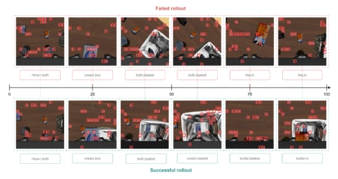
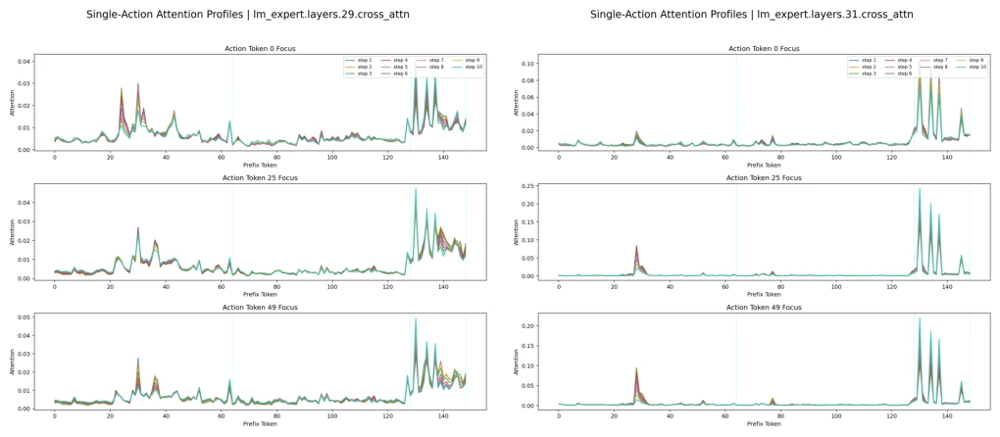
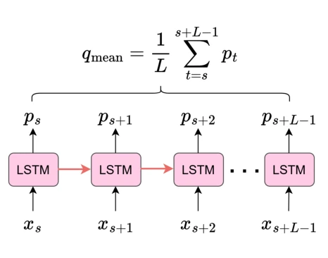
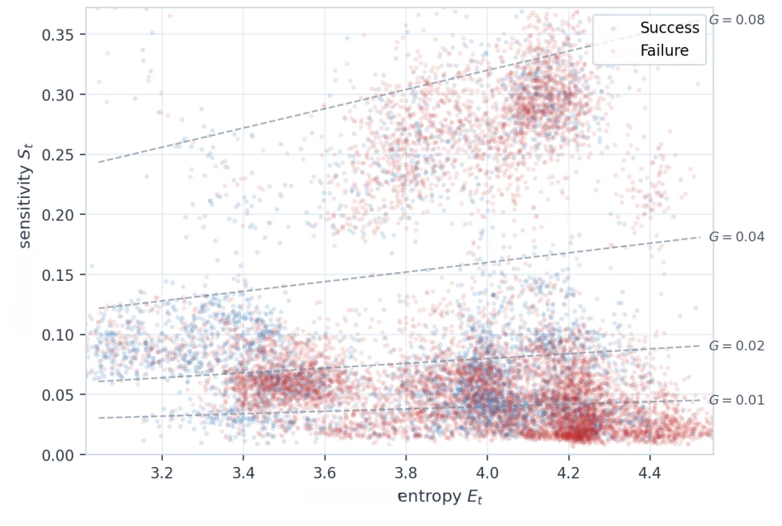
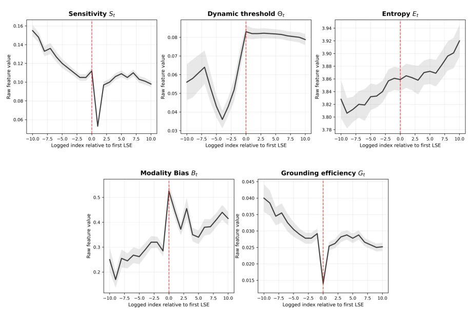
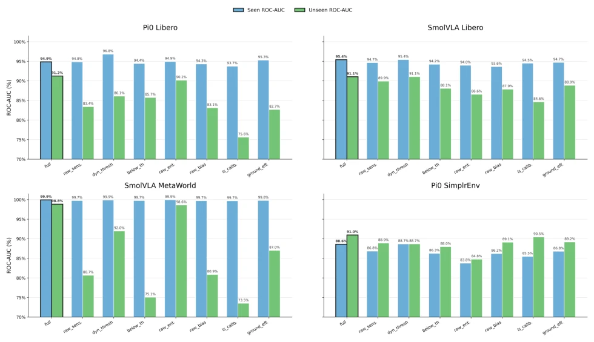
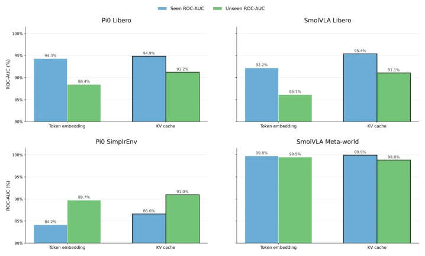
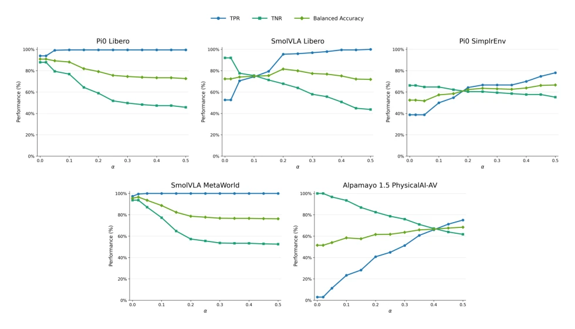

VLA 部署最大的坑是‘静默失败’：动作看着顺滑，其实根本没听懂指令。现有方法如 SAFE (Gu et al. 2025) 依赖内部特征探针，FIPER (Römer et al. 2025) 看观测新奇度，STAC (Agia et al. 2025) 盯动作一致性，但都没直接验证动作是否真正依赖当前视觉语言证据。这导致在未见任务中，特征空间几何或动作波动往往失效。GUARD 想解决这个根本问题：如果删掉关键 token 动作不变，那这动作就是无根之木。它试图从功能耦合角度重新定义失败检测，而非仅仅依赖分布偏移。
—

Figure 1: Qualitative comparison of saliency across failed (top) and successful (bottom) rollouts for the task “Put both the cream cheese box and the butter in the basket,” shown at normalized progress checkpoints. Numbered boxes indi- cate salient visual-token locations, while the text below each frame lists the corresponding salient language tokens. In the successful rollout, saliency initially concentrates on the cream cheese box as the robot places it in the basket, and then shifts to the butter as the robot completes the second subgoal. In the failed rollout, the visual and language saliency simi- larly supports placing the cream cheese box in the basket, but does not subsequently focus on the butter when the second subgoal should be executed. This motivates our hypothesis that, when
Figure 2: GUARD diagnostic creation with VLA rollout, saliency backward pass, and counterfactual probe with mean ablations.

Figure 4: Single-action cross-attention profiles over conditioning positions for action-query positions 0, 25, and 49 across ten denoising steps of SmolVLA on LIBERO spatial task. Panels (a) and (b) show the profiles from expert layers 29 and 31, respectively. The blue vertical lines delineate KV-cache positions associated with image input 1, image input 2, and the language instruction, in that order.

Figure 7: Online failure-classifier module. At each timestep, the most recent causal window of normalized GUARD diagnostics is processed by the temporal classifier and aggregated into a scalar failure score. Dense causal evaluation produces the score trajectory subsequently calibrated by functional conformal prediction.
Figure 3: Thresholded online failure detection across five policy–benchmark settings for unseen tasks. Blue and green bars show balanced accuracy at the lower and higher conformal levels, respectively, using the lower horizontal axis; the manipulation settings use α = 0.05 and 0.10, while PhysicalAI-AV uses α = 0.4 and 0.5. Blue circles and green diamonds report the corresponding average detection time as a percentage of rollout duration using the upper axis. Higher balanced accuracy and lower detection time are preferred. (Please zoom in 500%)

Figure 5: Entropy–sensitivity phase plot for surgical saliency diagnostics. Each point corresponds to one action-chunk generation step. The horizontal axis shows attention entropy Et, while the vertical axis shows surgical sensitivity St. Dashed curves denote iso-contours of grounding efficiency Gt = St/(Et + ε). The plot illustrates the operating regimes induced by the diagnostic definition: high sensitivity with low entropy corresponds to high grounding efficiency, while low sensitivity with high entropy corresponds to weak grounding efficiency.

Figure 6: Diagnostic trajectories for failed Pi0–LIBERO rollouts aligned at their first low-sensitivity event (LSE). Relative index zero, marked by the red dashed line, denotes the first LSE, and the shaded regions show variability across aligned episodes. Sensitivity St decreases before the event, drops sharply immediately afterward, and only partially recovers at a lower level. The dynamic threshold θt rises abruptly at the event and remains elevated, with a gradual decline later in the rollout. Attention entropy Et follows an overall increasing trend, indicating progressively more diffuse attention after the first LSE. Modality bias Bt spikes at the event and remains higher afterward despite short-term fluctuations, indicating a stronger imbalance between visual and language influence.

Figure 8: Leave-one-feature-out ROC-AUC analysis of the seven GUARD diagnostics. Each variant retrains the classifier after removing one feature; blue and green bars report seen- and unseen-task ROC-AUC, respectively. Larger reductions relative to the full model indicate a stronger contribution to failure classification and task-held-out generalization.

Figure 9: Saliency-target ablation comparing interventions on the input token embeddings and the final token-indexed KV cache. Blue and green bars report seen- and unseen-task ROC-AUC, respectively, across four manipulation policy–benchmark settings. All components other than the saliency and counterfactual-ablation target are held fixed.

Figure 10: Effect of the functional conformal miscoverage level α on GUARD’s unseen-task online failure detection across five policy–benchmark settings. Curves report the true-positive rate (TPR), true-negative rate (TNR), and balanced accuracy. Increasing α generally relaxes the alarm threshold, improving failure sensitivity while reducing specificity; balanced accuracy summarizes this trade-off.